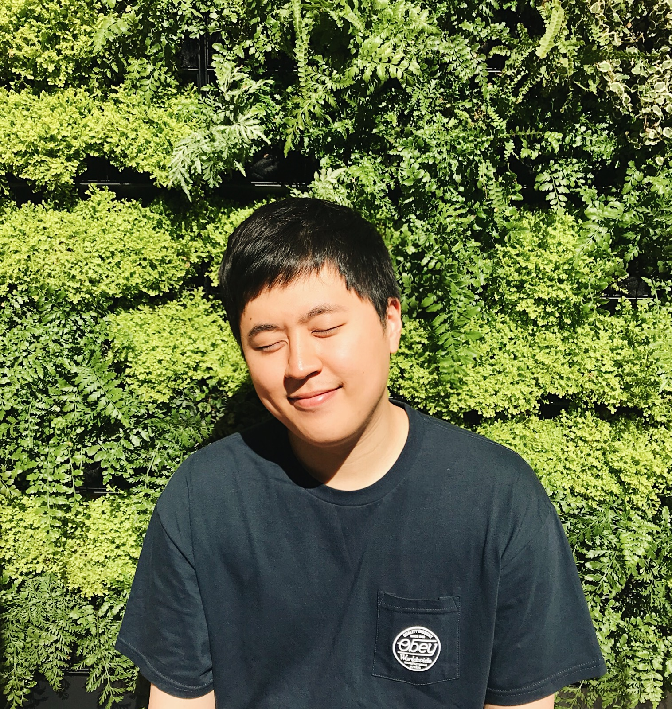

PhD Student
Molecular Engineering
University of Washington
justindaholee@gmail.com
[CV]
[Google Scholar]
[GitHub]
[Twitter]
[Facebook]

I develop and apply optogenetic tools to study physiology and development of excitable cells and tissue. I am advised by Andre Berndt. I received BS in Phyiology and MS in Applied Bioengineering at University of Washington. Before PhD study, I was with startup I co-founded NanoSurface Biomedical, and got trained from Deok-Ho Kim Lab.
Keywords: Optogenetics, Neuroscience, Cardiac Physiology, Electrophysiology, Stem Cell and Developments, Machine Learning
I officially joined Andre Berndt Lab for PhD study.
I started Molecular Engineering PhD program at University of Washington.
I left Deok-Ho Kim Lab.
I left NanoSurface Biomedical.
My two startup idea (Cognitive Heart, JEMS Tech) were both selected as finalists for Hollomon Innovation Challenge 2017!
mFAPs: A Versatile Platform For New Fluorescent Protein Sensor Engineering
Jason C Klima, Lindsey A Doyle, Justin H Lee,
Michael Rappleye, Lauren A Gagnon, Min Yen Lee,
Anastassia A Vorobieva, Jiayi Dou, Emilia P Barros, Samantha Bremner,
Cameron M Chow, Lauren Carter, David L Mack, Rommie E Amaro,
Joshua C Vaughan, Andre Berndt, Barry L Stoddard, David Baker
Nature Chemical Biology(in review)
Evaluation of the periodontal regenerative properties of patterned human periodontal ligament stem cell sheets
Joong-Hyun Kim, Seok-Yeong Ko, Justin H Lee, Deok-Ho Kim, Jeong-Ho Yun
Journal of periodontal & implant science 47 (6), 402-415
Combined effects of substrate topography and stiffness on endothelial cytokine and chemokine secretion
Hyeona Jeon, Jonathan H Tsui, Sue Im Jang, Justin H Lee, Soojin Park, Kevin Mun, Yong Chool Boo, Deok-Ho Kim
ACS applied materials & interfaces 7 (8), 4525-4532
Micro-and nano-patterned conductive graphene–PEG hybrid scaffolds for cardiac tissue engineering
Alec ST Smith, Hyok Yoo, Hyunjung Yi, Eun Hyun Ahn, Justin H Lee, Guozheng Shao, Ekaterina Nagornyak, Michael A Laflamme, Charles E Murry, Deok-Ho Kim
Chemical Communications 53 (53), 7412-7415
Control of the interface between heterotypic cell populations reveals the mechanism of intercellular transfer of signaling proteins
Junaid Afzal, Yasir Suhail, Eun Hyun Ahn, Ruchi Goyal, Maimon E Hubbi, Qasim Hussaini, David D Ellison, Jatinder Goyal, Benjamin Nacev, Deok-Ho Kim, Justin H Lee, Sam Frankel, Kevin Gray, Rashmi Bankoti, Andy J Chien, Andre Levchenko
Integrative Biology 7 (3), 364-372
Modeling intercellular transfer of biomolecules through tunneling nanotubes
Yasir Suhail, Justin H Lee, Mark Walker, Deok-Ho Kim, Matthew D Brennan, Joel S Bader, Andre Levchenko
Bulletin of mathematical biology 75 (8), 1400-1416